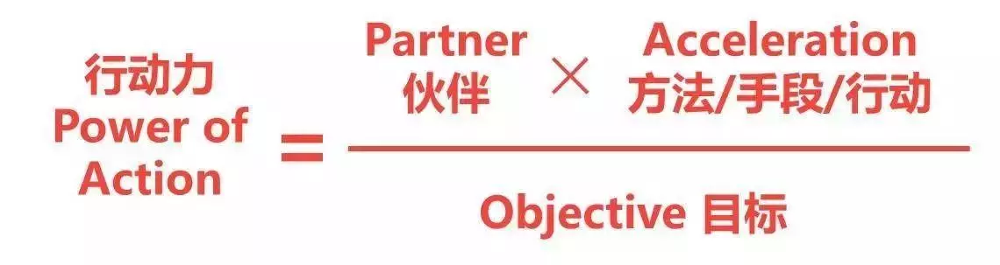
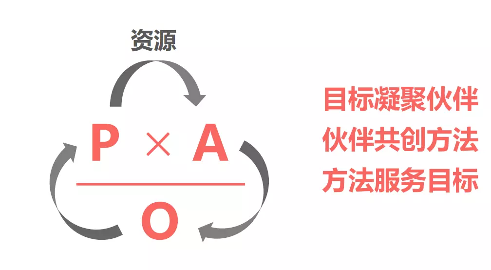

最近通过《跃迁-成为高手的技术》让我了解到POA理论，昨天有幸参加了朱颖磊 老师线下POA实践分享，通过面对面的交流，发现了POA行动力的强大力量，更重要的是通过这个理论，你可以随时随地在工作和生活中使用，感受他的魅力所在。
一般我们说的目标一般都是What，比如说——我要早起!
首先要问问自己，为什么要早起？这个背后的原因是不是你的真实目标。
比如说你自己忍受不了自己一天睡10个小时的颓废状态!
或者是你女朋友每天起的很早，自己也好好在她面前表现，不能懒惰!
这些内在驱动力Why远远比What（我要早起!）更重要。
建议：如果在制定一个目标后决定这个目标不够明确时，在目标下方写出一堆我为什么要去做这件事的原因，会把原因一个个的罗列出来，一个好的目标，除了要做什么更重要的是为什么要去做。
现在很多人天天口头喊着减肥减脂，但是效果并不理想，为什么？因为减肥是你的假目标，你真实的问过自己没？ 你为什么要减肥，减肥成什么样子，有没有标准，每个月的计划？
假如：你减肥的原因是：为了吸引异性。此时减肥并不是你的目标而是吸引异性的方法，这个很有意思，这样的话你为了吸引异性让身材更好，减肥是你的其中一个方法而已。
你会发现你的目标变了，下面通过POA 公式解释说明减肥的案例。

公式里的P指伙伴，O指目标，A指方法手段，POA指行动力，这个公式代表方法越有效，行动力就越强；伙伴越多，行动力就越快速；目标越小越聚焦，行动力就越强。
这个理论公式厉害的地方不仅仅是一个公式，它是一个无限的正向循环

再次拿那个减肥的例子说明：
最开始的目标是减肥，然后问下自己为什么要减肥，你会发现，你减肥的原因不一样，你真实的O也会变，随着O的改变，你的P也会变，假如真实的目标是为了健康，那么和健康产生共鸣人才能成为你的伙伴P，帮助你减肥，这些伙伴会想法创造方法，更快的帮助你减肥减脂，比如你们有同样的需求，会公共想办法，分享，一起健身，分享健康饮食习惯，这样减肥的效果会更好。
背后什么原因让你读书呢？你真实背后的目标是什么呢？比如：你为了成为一名培训师，需要演讲的技巧，那么你的读书计划应该和演讲相关，这样就缩小了你读书的类型。用POA解释，你的O是 提高演技技巧，那么P 应该是和演讲有共鸣的人，比如：演讲导师，可以帮助你提高演讲，他从你的目标中获取成就感或者金钱；和你一样需要提升演讲的人，相互学习寻找方法；有这方面技巧的朋友可以给你指导性意见，从O中获取分享的快乐满足感；P会一起想办法如何更快的实现这个O，共创方法A，满足O，这样整合循环走起。
这里为了让你的行动力更大，你的目标必须要聚焦，一年50本的读书目标太大，可以更小比如：1周一本书，让你的目标分解，可以一个大目标，然后分解成小小的目标，每次完成一个小目标的同时，心里的成就感倍增，你的动力会更大。不然天天对着这么大的目标看，愁都愁死了。
我们知道，星巴克是卖咖啡的，但是他的目标并不是卖咖啡的，为什么这么说呢？我们用POA分析下：
星巴 克进入中国，除了卖咖啡和糕点，还卖起了月饼和粽子。卖蛋糕和三明治可以理解，为了让客人能更多地留 在门店内， 增加2次消费。 但是，为什么要卖顾客不会 在门店里品尝的月饼呢？如果大家了解星巴克的目标（Objective），你可 能就能理解了。星巴克的创始人Howard Schultz，这么来描述他创建的星巴克: We’re in the people business serving coffee, not thecoffee business serving people.
所以，星巴克不是单纯做咖啡生意的，而是做人与人的联系的。咖啡只是创造人与人联系的方法 （Acceleration）。我们来比较一下，Coffee business 和 People business 2个不同O带来的对星巴克business不同的区别吧？
O = Coffee business:
星巴克的O就是培育咖啡文化，卖更多的咖啡，这可能是大部分人的理解。假如这是星巴克的O，那这个O带来的Partner就只剩下星巴克自己的股东和员工，最多还有一些咖啡的热衷爱好者，没有大部分消费者。因为，卖更多咖啡不是消费者的O。此外，实现这个 培育咖啡文化的A，也就局限在咖啡产品上，拿铁，摩卡，星冰乐。最多可以卖卖杯子，月饼是毫无干系的。
O ＝ People business：
星巴克的目标（O）其实是，建立人与人之间的联系。这个O，使得所有人都成为P的可能，哪怕是不爱喝咖啡的消费者，只要他们有与人交际的需求，就可以去星巴克找个沙发点杯果汁。所以，创造人与人联系的第三空间（咖啡馆）才是星巴克提供的A。咖啡只是这个第三空间里面提供的一项服务。所以，除了咖啡，也有糕点，有餐点。至于，为什么在中国卖月饼。其实，很简单。因为，节庆礼品是中国人建立人与人联系的重要方法（A）。星巴克，入乡随俗，把握商机，不失为智慧的 战略。
两者一比较，大家很容易发现，后者P比前者多，A也比前者多。根据POA公式:POA＝(Partner/Objective)*AccelerationP和A是正关系，越多越有效行动力就越强。这也就很好解释了，为什么星巴克在全球那么成功。 因为，它不是一个卖咖啡的公司！
总结：平时我们都误以为What是目标O，其实Why才是真正的目标O。
所以要学会区分目标O，这样才会改变你的行动力。有没发现越来越有意思，O 可以 和 A 相互转化，POA 理论神奇的地方就在这里。
今天讲的主要是目标层面，POA 理论运用场景非常多，喜欢的朋友可以一起研究总结，让你成为更好的自己。
昨天现场活动图片：证明自己参加过POA，第一排唯一的男生，哈哈，希望大家一起进步。
如有收获，请帮忙转发，后续会有更好文章贡献，您的鼓励是作者最大的动力！
欢迎关注我的公众号：架构师的修炼，获得独家整理的学习资源和日常干货推送。